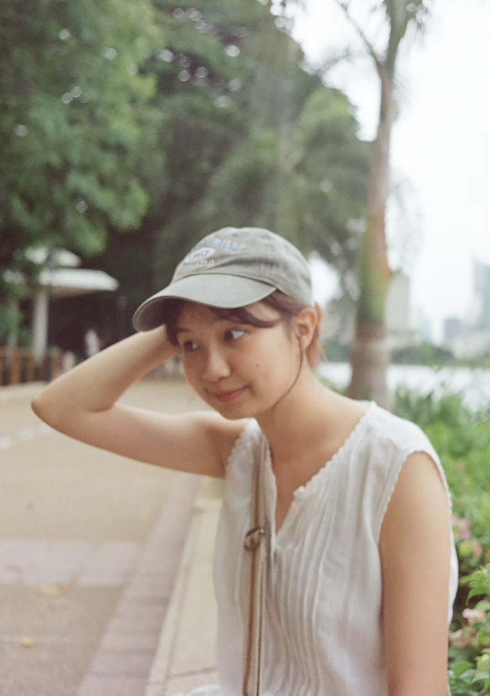
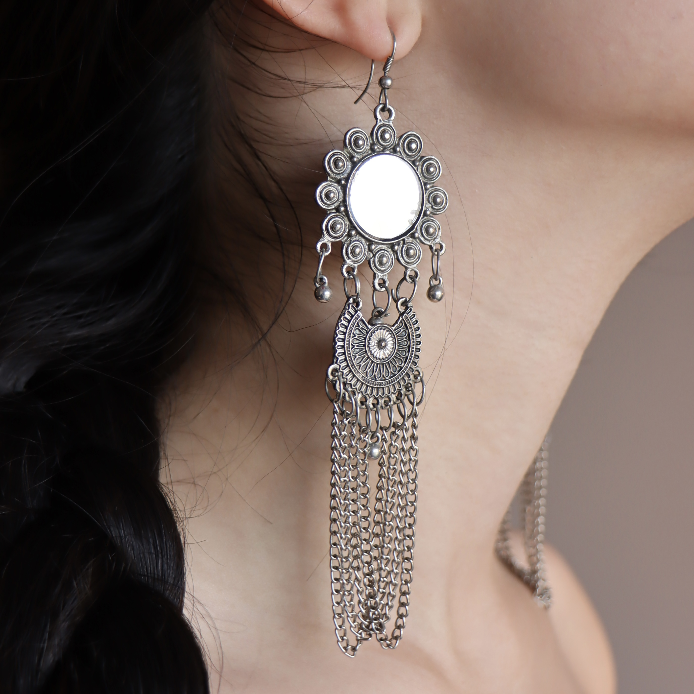
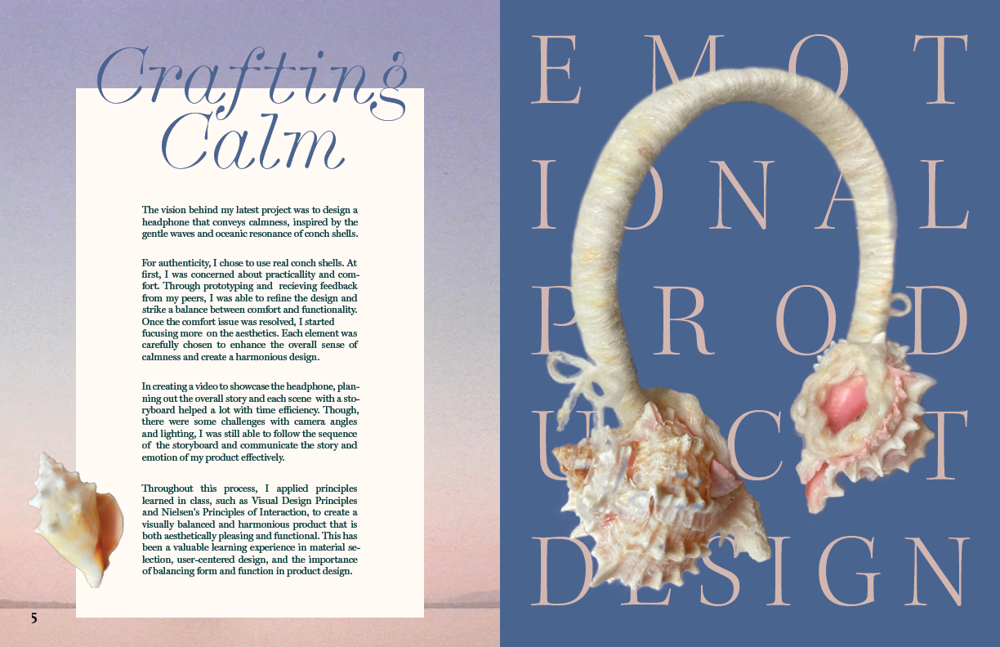
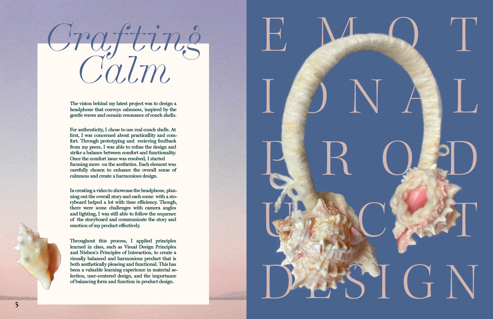
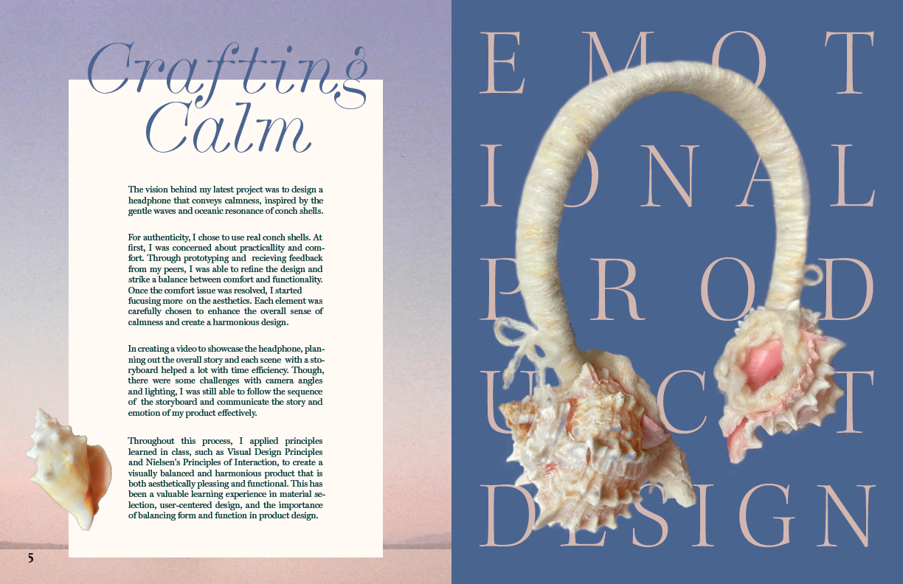

Portfolio
it’s a pleasure to meet you!
I’m Kaitlyn,
a design student in global business and digital art program at university of Waterloo. I have a passion for photography and publication design.
→ contact me
( View More Work →)


 

